introduction
Welcome to the documentation for our liability manager website! This
document serves as a comprehensive guide to understanding the
development process, tools used, and overall architecture of our
project. As part of our commitment to transparency and collaboration,
we've compiled this documentation to provide insight into the creation
of our website.
Requirements :
To effectively develop, deploy, and maintain the website you are
building, the following hardware, software, and resources are required
Hardware
-
Processor: Dual-core processor (Intel Core i3 or AMD
equivalent) or higher.
- RAM: 8 GB of RAM or higher.
-
Storage: Solid State Drive (SSD) with a minimum of 256 GB of
storage space.
-
Graphics: Integrated graphics card or dedicated GPU with at
least 1 GB of video memory.
- Display: Minimum resolution of 1366 x 768 pixels.
-
Network:Ethernet port or Wi-Fi capability for internet
connectivity.
Software Requirements
-
Operating System: Compatible with Windows, macOS, or
Linux operating systems.
-
Development Tools:
-
GitBash: Command-line interface for interacting
with Git repositories.
-
GitHub: Web-based Git repository hosting service
for version control and collaboration.
-
Jenkins: Open-source automation server for
continuous integration and continuous deployment (CI/CD).
-
Minikube: Tool for running Kubernetes clusters
locally for development and testing purposes.
-
Docker Desktop: Desktop application for building,
managing, and deploying containerized applications using Docker.
-
Docker Hub: Cloud-based registry service for
storing and sharing Docker container images.
-
Jira: Project management and issue tracking tool
for agile teams, used for ticketing and task management.
-
Prometheus: Open-source monitoring and alerting
toolkit for containerized environments, used for metrics
collection.
-
Grafana: Open-source analytics and monitoring
platform, used for visualizing metrics and monitoring data from
Prometheus.
Additional Requirements
-
Internet Connection: Stable internet connection for
accessing cloud services, repositories, and resources.
-
Permissions and Credentials: Access permissions and
credentials for utilizing various tools and services, such as GitHub
repositories, Docker Hub, and Jira.
1. Project Setup
2. Version Control Setup
2.1 Installation of Git
First, you need to install Git on your local machine if you haven't
already done so.
2.2 GitHub Account Setup
If you don't have a GitHub account, go to
GitHub and sign up for a new account.
2.3 Repository Creation
Once you have set up your GitHub account, you can create a new
repository to host your project's code.
- Log in to your GitHub account.
-
Click on the "+" icon in the top right corner and select "New
repository."
-
Enter a name for your repository, a brief description (optional), and
choose whether it should be public or private.
-
Optionally, add a README file, a .gitignore file, and choose a
license.
- Click on the "Create repository" button.
2.4 Cloning the Repository
Now that you have created a repository on GitHub, you need to clone it
to your local machine to start working on your project.
- Open GitBash or your preferred terminal.
-
Navigate to the directory where you want to clone the repository.
- Use the following command to clone the repository:

Replace repository_url with the URL of your GitHub repository.
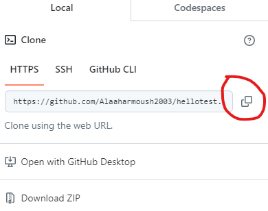
3. Continuous Integration/Continuous Deployment (CI/CD) Setup
if you have not installed and Configure Jenkins and started it
follow this documentation
Configure CI/CD Pipeline
-
Create a New Item:
From the Jenkins dashboard, click on "New Item" to create a new
Jenkins job.
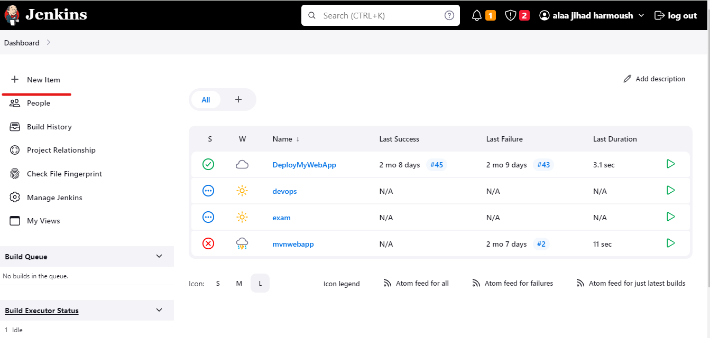
-
Enter Job Details:
Provide a name for your job and select the type of job (e.g.,
Freestyle project, Pipeline) We need to Use Pipeline.
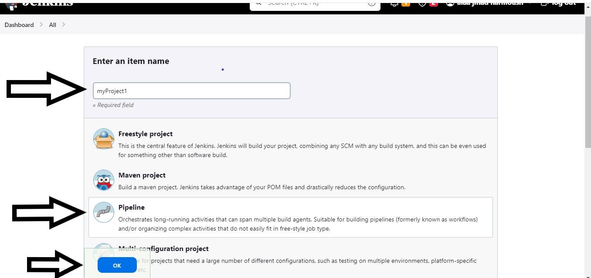
-
Configure Pipeline
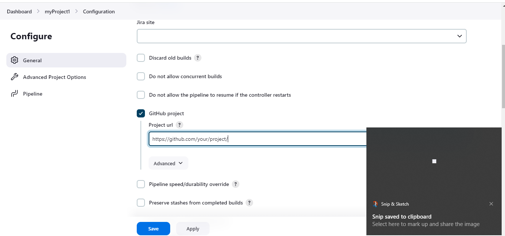
choose github Project and add the link from your browser when you
are on GitHub
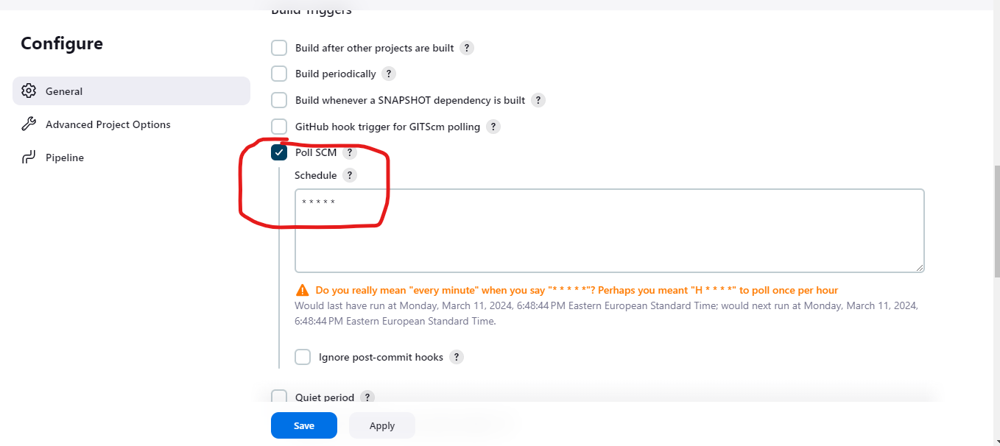
choose Pull SCM and * * * * * to scan every 1 minute on Docker Hub
if you have pushed and pull the images
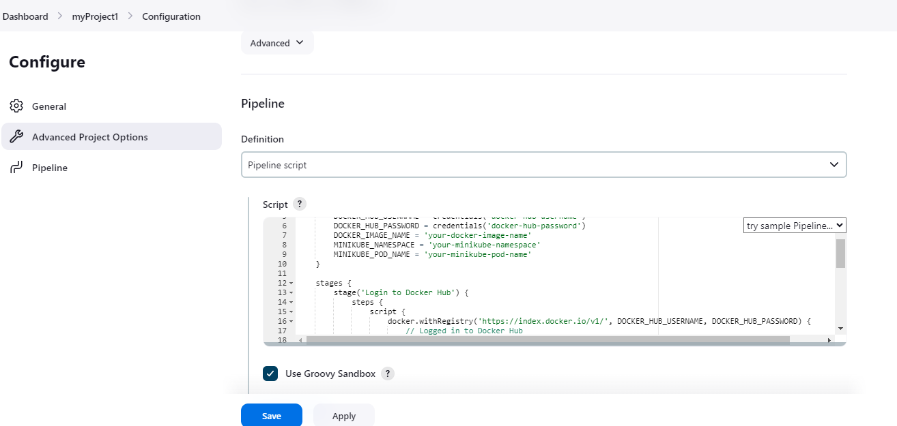
add a Pipeline Script that will login to Docker Hub Pull the images
and Run them on Minikube
4. Setting Up a Local Kubernetes Environment with Minikube
Introduction
Minikube is a tool that enables you to run a single-node Kubernetes
cluster locally. It's an ideal solution for development, testing, and
learning Kubernetes concepts without the need for a full-scale cluster.
This guide will walk you through the process of installing and
configuring Minikube to create a local Kubernetes environment.
Prerequisites
Before you begin, ensure that you have the following prerequisites
installed:
-
Hypervisor: Minikube supports several hypervisors, including
VirtualBox, Hyper-V, and KVM. Make sure to install the appropriate
hypervisor for your operating system.
-
kubectl: The Kubernetes command-line tool, kubectl, is used to
interact with your Kubernetes clusters. Install kubectl by following
the official Kubernetes documentation:
Installing kubectl.
Installation
Step 1: Install Minikube
-
Download the Minikube binary for your operating system from the
official Minikube releases page:
Minikube Releases.
-
Place the downloaded binary in your system's PATH. You may need to
make it executable by running
chmod +x minikube.
-
Verify the installation by running
minikube version.
Step 2: Start Minikube Cluster
-
Open a terminal window and run the following command to start the
Minikube cluster:
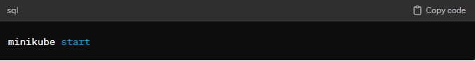
-
Minikube will download the necessary Kubernetes ISO and create a
virtual machine (VM) to host the cluster. This process may take a few
minutes.
-
Once the cluster is up and running, verify its status by running:
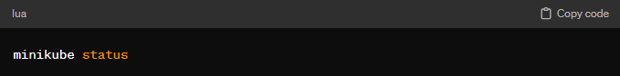
Configuration
Step 1: Configure kubectl
Minikube automatically configures kubectl to use the Minikube cluster
context. To verify the configuration, run:
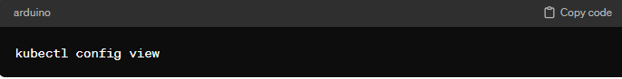
Step 2: Access Minikube Dashboard (Optional)
s To access the Kubernetes dashboard, run the following command:
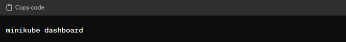
This command opens a web browser with the Kubernetes dashboard running
in your Minikube cluster.
5. Back To GitHub
1- Setting Up GitHub Workflows
Navigating to GitHub
2- Configuring Docker Images
-
Navigate to Your Repository
Log in to GitHub and navigate to the repository where you want to
create the workflow.
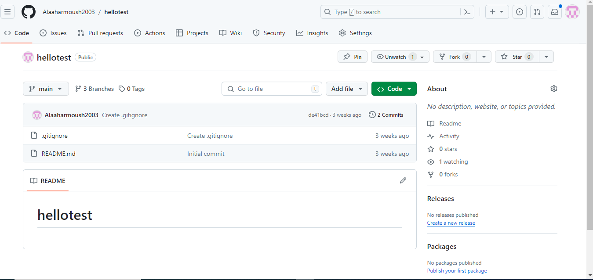
-
Access the Actions Tab
In the repository, click on the "Actions" tab. This tab is where you
can manage workflows for your repository.
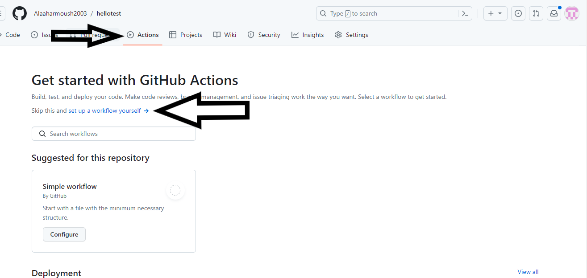
-
Set Up a New Workflow
Click on the "Set up a workflow yourself" button. This will allow
you to create a custom workflow file.
-
Choose a Workflow Template
You can either start from scratch by selecting the "Starter
workflow" template or choose from pre-defined templates based on the
programming language or framework you are using. Alternatively, you
can create a new YAML file manually Or Can Use ChatGBT to help you
write your own Yaml file.
-
Edit the Workflow File
GitHub will open a new file with the .yml extension in the
.github/workflows directory of your repository. This file contains
the workflow configuration written in YAML syntax.
-
Define Workflow Events
You'll start by defining the events that trigger the workflow. For
example, you can specify that the workflow should run whenever code
is pushed to a specific branch or when a pull request is opened.
-
Specify Jobs and Steps
Within the workflow file, you'll define one or more jobs that need
to be executed. Each job consists of one or more steps. Steps are
individual tasks that are executed sequentially within a job.
-
Configure Actions
You can use pre-built actions provided by GitHub or third-party
actions from the GitHub Marketplace within your workflow. Actions
are reusable units of code that perform specific tasks, such as
checking out code from the repository, running tests, or deploying
applications.
-
Commit the Workflow File
Once you have configured the workflow to your liking, commit the
changes to the repository. You can provide a commit message
describing the changes you made to the workflow file.
-
Monitor Workflow Runs
After committing the workflow file, GitHub will automatically start
running the workflow based on the events you specified. You can
monitor the progress of workflow runs and view detailed logs for
each run in the "Actions" tab of your repository.
3- Implementing Automation
After Setting Up everythig now you can go back to Vs Code and Edit your
code And then Push to Github by using the three commands
git add .
git commit -m "your message"
Git Push origen (branch you want to push to)
Start monitoring your Kubernetes cluster with Prometheus and Grafana
Install Prometheus
Once the cluster is set up, start your installations. Install Prometheus
first by following the instructions below. First, add the repository in
Helm:
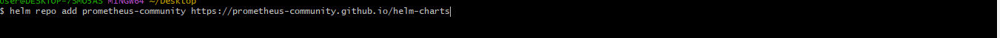
Then install your Prometheus Helm chart. You should see:
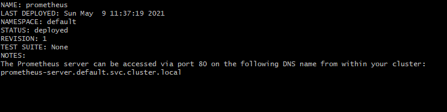
Get the Prometheus server URL by running these commands in the same
shell:
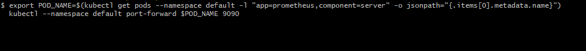
You can access the Prometheus Alertmanager via port 80 on this DNS name
from within your cluster:
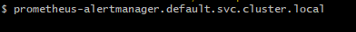
Get the Alertmanager URL by running these commands in the same shell:
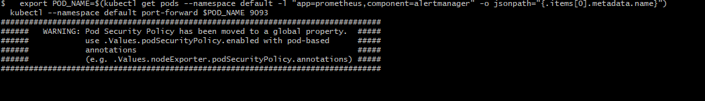
You can access the Prometheus PushGateway via port 9091 on this DNS name
from within your cluster:
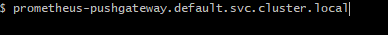
Get the PushGateway URL by running these commands in the same shell:
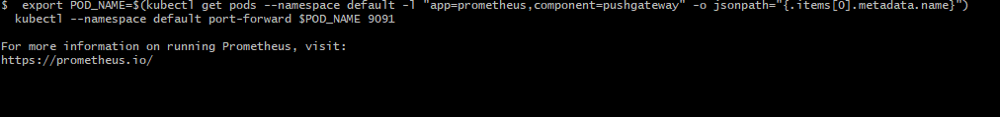
Check to confirm your pods are running:
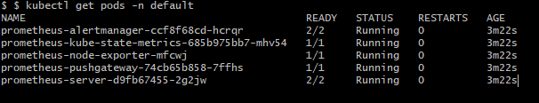
Next, expose your port on the Prometheus server pod so that you can see
the Prometheus web interface. To do this, you need the service name and
port. You also need to come up with a name to open the service using the
Minikube service command. Get the service name for
prometheus-server:
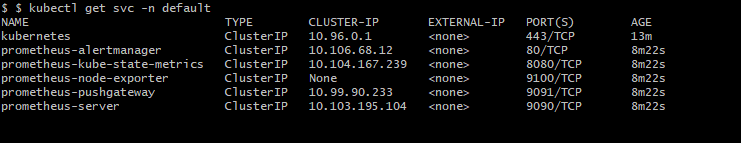
Expose the service as type Node-port. Provide a target port of 9090 and
a name you want to call the server. The node port is the server
listening port. This is an extract of the Helm chart:
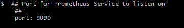
The command is:
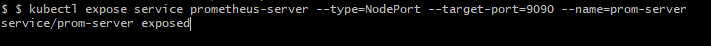
Next, you need Minikube to open the service and browser:

Your browser should open and show you the Prometheus service.

Congratulations! You now have Prometheus installed on your cluster.
Install Grafana
Next, install Grafana and configure it to work with Prometheus. Follow
the steps below to expose a service to configure Grafana and collect
data from Prometheus to gather your steady state.
Start with getting your Helm chart:

Search for your chart:

Since stable/grafana is depreciated, install bitnami/grafana. Then
install your chart:

-
Get the application URL by running:

-
Get the admin credentials:
echo "User: admin" echo "Password: $(kubectl get secret
grafana-admin --namespace default -o
jsonpath="{.data.GF_SECURITY_ADMIN_PASSWORD}" | base64 --decode)"
As you can see in the Helm installation output, the target port for
Grafana is 3000, so you will use that port for exposing the service to
see Grafana's web frontend. Before exposing the service, confirm your
services are running:
$ kubectl get pods -A NAMESPACE NAME
READY STATUS RESTARTS AGE
default grafana-6b84bbcd8f-xt6vd
1/1 Running 0
4m21s
Expose the service:
$ kubectl expose service grafana --type=NodePort --target-port=3000
--name=grafana-server
service/grafana-server exposed
$ kubectl expose service grafana --type=NodePort --target-port=3000
--name=grafana-server service/grafana-server exposed
You will see the welcome screen where you can log in.
Set up credentials to log into Grafana using kubectl. The commands
appeared in the installation's output; here are the commands in use:
$ echo "User: admin"
User: admin
$ echo "Password: $(kubectl get secret grafana-admin --namespace default
-o jsonpath="{.data.GF_SECURITY_ADMIN_PASSWORD}" | base64 --decode)"
Password: G6U5VeAejt
Log in with your new credentials, and you will see the Grafana
dashboard.
Configure Grafana with Prometheus
Now that you can log in to your Grafana instance, you need to set up the
data collection and dashboard. Since this is an entirely web-based
configuration, I will go through the setup using screenshots. Start by
adding your Prometheus data collection. Click the gear icon on the
left-hand side of the display to open the Configuration settings, then
select Data Source.
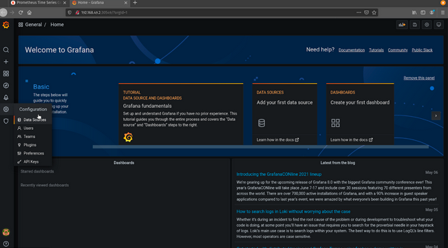
On the next screen, click Add data source.
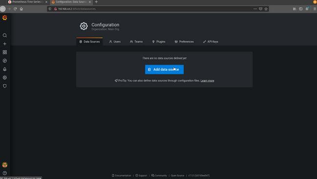
Select Prometheus.
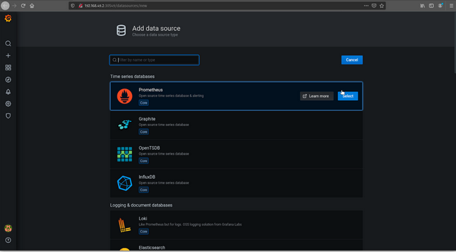
Because you configured your Prometheus instance to be exposed on port
80, use the service name prometheus-server and the server port 80.
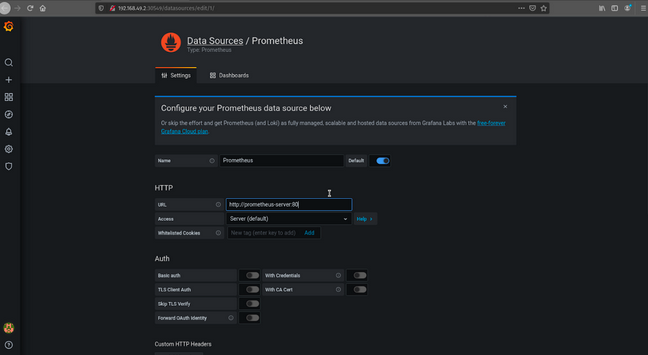
Save and test your new data source by scrolling to the bottom of the
screen and clicking Save and Test. You should see a green banner that
says Data source is working.
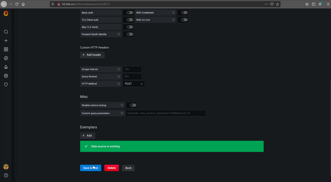
Return to the top of the page and click Dashboards.
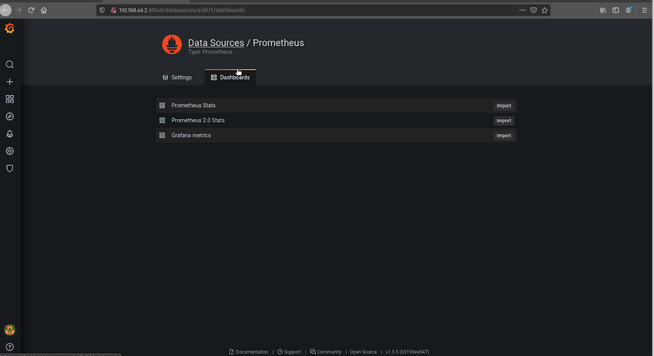
Import all three dashboard options.
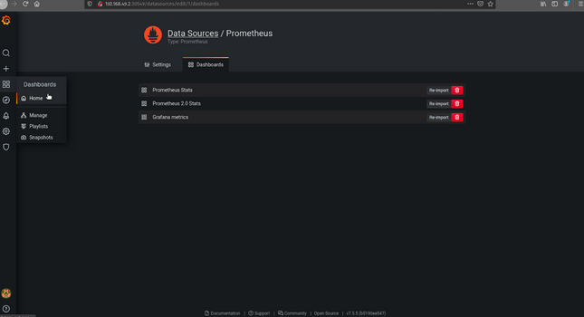
Click the magnifying glass icon on the left-hand side to confirm all
three dashboards have been imported.
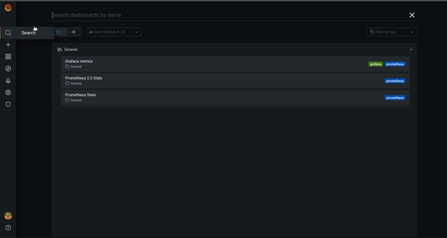
Now that everything is configured, click Prometheus 2.0 Stats, and you
should see something similar to this.
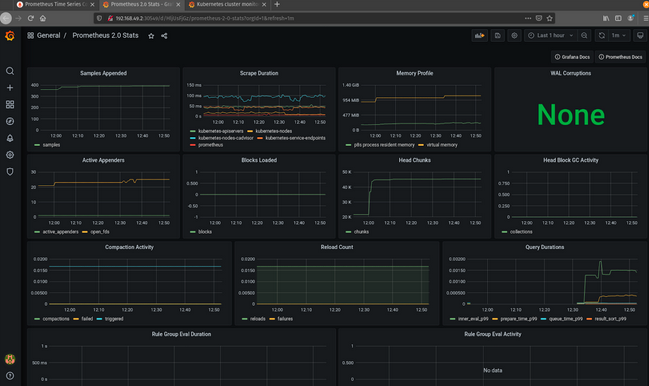
Congratulations! You have a set up basic data collection from Prometheus
about your cluster.